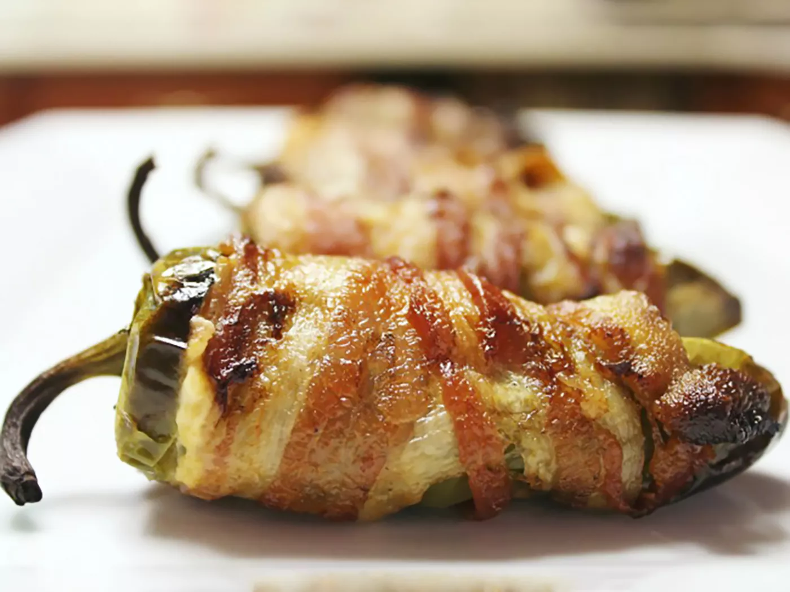

Bacon-Wrapped Jalapeño Poppers

Description
These jalapeño poppers are creamy in the middle with crispy bacon on the outside. They're easy to make and taste so much better than traditional poppers.
- ½ cup cream cheese
- ½ cup shredded sharp Cheddar cheese
- 12 jalapeno peppers, halved lengthwise, seeds and membranes removed
- 12 slices bacon
Directions
- Preheat the oven to 400 degrees F (200 degrees C). Line a baking sheet with aluminum foil.
- Mix cream cheese and Cheddar cheese together in a bowl until evenly blended. Fill each jalapeño half with cheese mixture. Put halves back together and wrap each stuffed pepper with a slice of bacon. Arrange bacon-wrapped peppers on the prepared baking sheet.
- Bake in the preheated oven until bacon is crispy, 25 to 35 minutes.
Go Back!